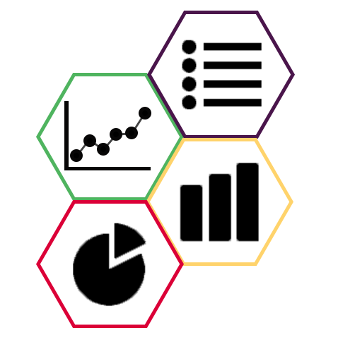

<mat-drawer-container
  class="example-container"
  (window:resize)="onResize($event)"
>
  <mat-toolbar color="accent">
    <button mat-icon-button (click)="drawer.toggle()">
      <mat-icon>menu</mat-icon>
    </button>

    <span>Simple CRM</span>
  </mat-toolbar>

  <mat-drawer #drawer class="sidenav" [mode]="mode" [opened]="activeSide">
    <div class="logo">
      
      <span>Simple CRM</span>
    </div>

    <div class="nav-items">
      <div class="nav-item" routerLink="dashboard" (click)="closeDrawer()">
        <mat-icon>dashboard</mat-icon>
        <span>Dashboard</span>
      </div>

      <div class="nav-item" routerLink="user" (click)="closeDrawer()">
        <mat-icon>person</mat-icon>
        <span>User</span>
      </div>

      <div class="nav-item" routerLink="createuser" (click)="closeDrawer()">
        <mat-icon>person_add</mat-icon>
        <span>Create random User</span>
      </div>

      <hr />

      <div class="nav-item" routerLink="user" (click)="closeDrawer()">
        <mat-icon>settings_suggest</mat-icon>
        <span>Settings</span>
      </div>

      <div class="nav-item" routerLink="user" (click)="closeDrawer()">
        <mat-icon>help_outline</mat-icon>
        <span>Help</span>
      </div>

      <div class="nav-item" routerLink="user" (click)="closeDrawer()">
        <mat-icon>info_outline</mat-icon>
        <span>Legal</span>
      </div>
    </div>
  </mat-drawer>

  <div class="content">
    <router-outlet class="router"></router-outlet>
  </div>
</mat-drawer-container>
